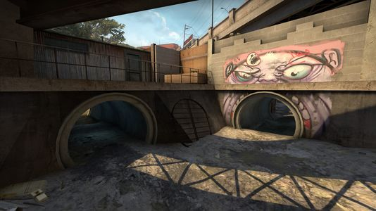

O čem hra CSGO
Counter Strike:Global Offensive je poslední hrou ze série Counter Strike
a patří mezi nejúspěšnější FPS (First Person Shooter - stílečky z pohledu první osoby) hry vůbec.
Jedná se o taktickou střílečku, jejímž principem je soupeření dvou týmů, Teroristů a Counter
Teroristů (tedy policistů/speciálních jednotek) v různých módech hry.
Pokud budeme chtít hrát kompetetivně, je hra rozdělena do jednotlivých kol, jejichž počet
je určován
právě hraným módem, Nejběžněji hráči hrají v pěti lidech proti pěti lidem dvě poloviny po 15 kolech,
v polovině se strany vymění a první tým, který vyhraje 16 kol, vyhraje celý zápas. Může nastat i
situace, kdy oba týmy získají výhru 15 kol, v takové situaci hra končí remízou.
Ranky ve hře
Rank je výkonnostní skupina, která ohodnocuje hráče v klasickém kompetetivním
módu hry CS:GO. Každý hráč obdrží rank, který se odvíjí od jeho výkonu ve hře. Matchmakingový
systém (systém vyhledávající pro hráče zápasy) hledá pomocí vašeho ranku možné protivníky se
stejným nebo podobným rankem. Ranky jsou ve hrách zavedeny proto, aby se zamezilo nevyrovnaným
zápasům, a tak mohly zápasy hráče více bavit. Pozor, rank získáte pouze tehdy, pokud zápas
vyhledáváte přes hru samotnou. Pokud hrajete na externích stránkách, rank vám to neovlivňuje.
Hráči obdrží svůj rank po deseti výhrách v klasickém kompetetivním módu hry
(max. 2 výhry denně, sám/v 5 lidech) a od toho momentu se jim zobrazuje rank v hlavním menu
vedle avataru, medailí a vystavitelných itemů.Rank se mění časem podle toho, jak se ve hře
zlepšujeme nebo zhoršujeme od nejhoršího Silver I až k nejlepšímu Global Elite. Celkem je
ve hře 18 různých ranků.
Mapy ve hře

INFERNO

MIRAGE

NUKE
OVERPASS

ANCIENT

DUST II

VERTIGO